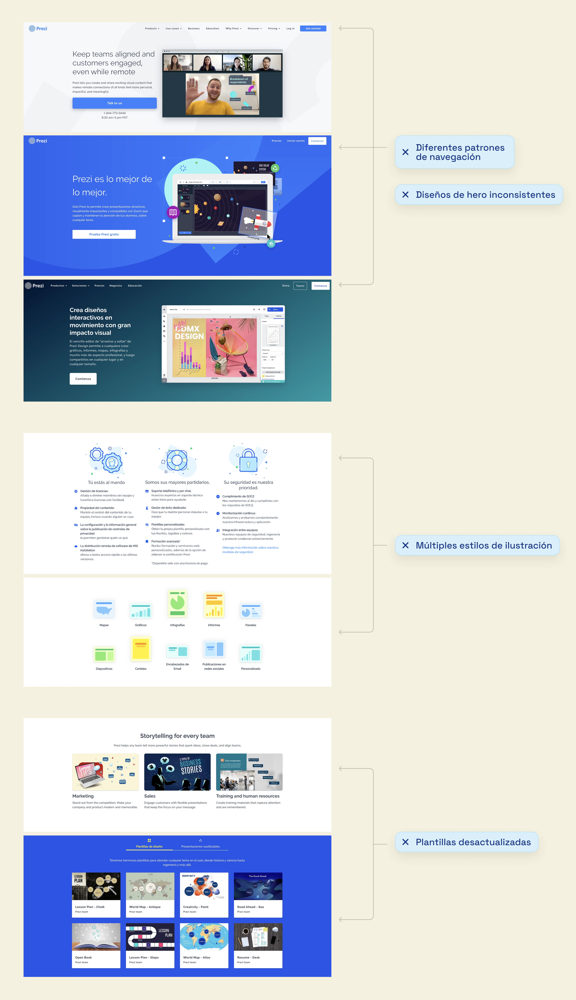
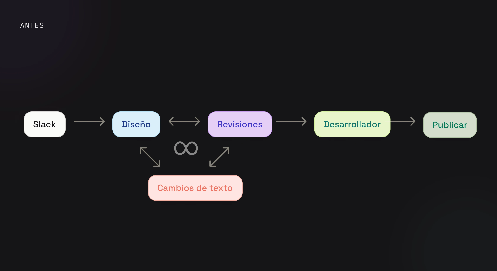
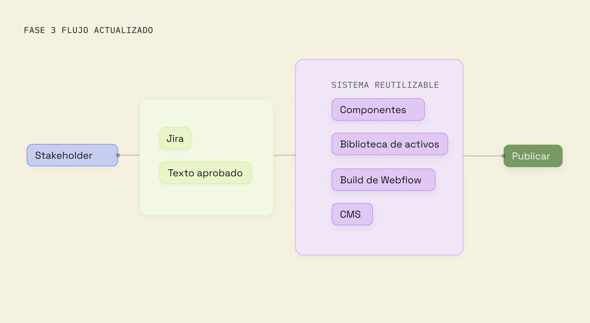
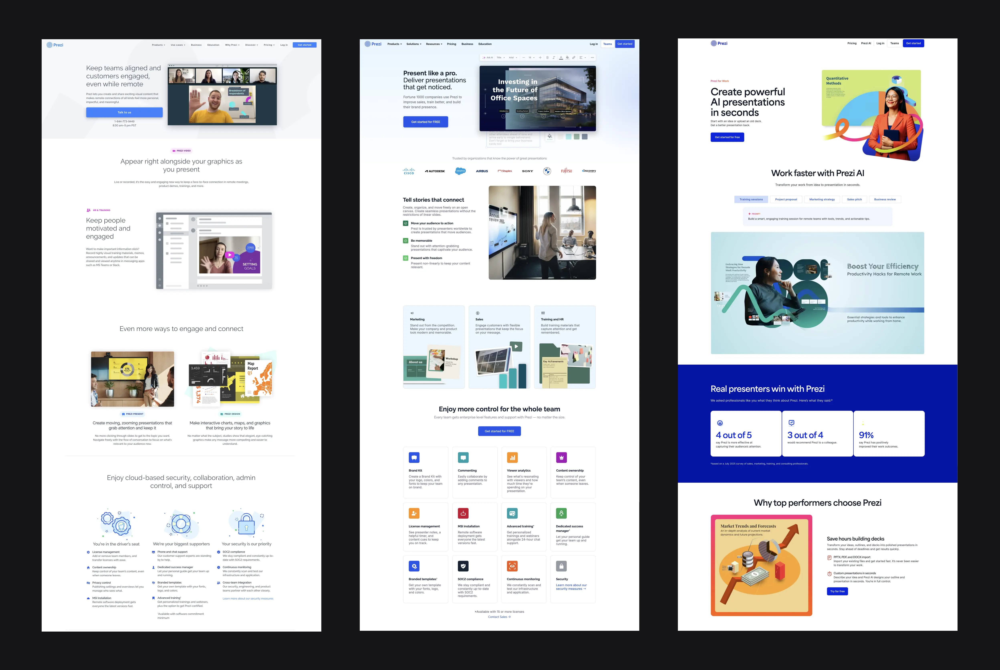

Diseñando un mejor
flujo de trabajo para el sitio
Cuando asumí la propiedad del sitio web, rápidamente me di cuenta de que el reto no era solo migrar páginas a Webflow — era mejorar cómo las páginas pasaban de la solicitud a la publicación.
01
Contexto
El sitio web no tenía un responsable de diseño claro ni un flujo de trabajo consistente. Las landing pages se solicitaban por Slack con poca documentación. El contenido cambiaba con frecuencia mientras las páginas ya estaban en diseño, cada página se trataba como un proyecto separado, y el CMS heredado hacía lentas incluso las actualizaciones pequeñas. Páginas similares evolucionaban de forma independiente, creando inconsistencias visuales en todo el sitio.
02
Rol y reto
El reto no era simplemente mover páginas a Webflow — era crear un proceso que hiciera más fácil repetir la publicación. En lugar de rediseñar todo el sitio de una vez, usamos proyectos entrantes y páginas desactualizadas para probar un mejor flujo de trabajo, introducir componentes reutilizables y construir gradualmente un sistema de publicación más escalable.
03
Proceso
En lugar de rediseñar todo el sitio de una vez, empezamos con proyectos entrantes y páginas desactualizadas. Cada proyecto se convirtió en una oportunidad para mejorar el proceso, introducir componentes reutilizables y construir gradualmente un sistema de publicación más escalable.
Entender el sistema
Antes de proponer un sistema nuevo, mapeé el sitio web existente para entender qué se podía reutilizar, qué necesitaba reconstruirse y de dónde venían las mayores fuentes de inconsistencia.

La auditoría reveló cuatro problemas recurrentes:
- Patrones de navegación distintos entre páginas
- Layouts de hero inconsistentes, sin ubicación común de CTA
- Múltiples estilos de ilustración y visuales
- Plantillas de producto desactualizadas
Mejorar el flujo de trabajo
La migración por sí sola no resolvería los problemas de publicación. Trabajando con mi gerente y los desarrolladores, movimos las solicitudes a Jira, definimos el contenido antes, y construimos componentes reutilizables en Figma y Webflow para que las páginas pudieran ensamblarse en lugar de reconstruirse.

Los componentes compartidos redujeron los handoffs
A medida que la librería de componentes crecía, pasé de entregar diseños a construir páginas directamente en Webflow. Reutilizamos componentes compartidos para landing pages y CMS, reduciendo handoffs sin dejar fuera a ingeniería en la nueva funcionalidad.

El sitio web evolucionó
junto con el proceso
Una vez establecidos el flujo de trabajo y los componentes, las páginas nuevas se volvieron más rápidas de crear y más fáciles de mantener. El rediseño no fue un solo lanzamiento — fue la evolución gradual de una plataforma de publicación escalable.
- Páginas independientes
- Layouts distintos
- Actualizaciones manuales
- Secciones compartidas
- Figma ↔ Webflow
- Patrones consistentes
- Marketing edita el CMS
- Publicación más rápida
- Plantillas reutilizables

04
Resultado
Los componentes reutilizables y un flujo de trabajo más claro hicieron la publicación más rápida y consistente. El equipo pudo crear múltiples páginas basadas en CMS adaptando estructuras existentes en lugar de reconstruir cada layout desde cero.
05
Reflexión
Los buenos sistemas no reemplazan la creatividad — la protegen. Cuando el trabajo rutinario se vuelve predecible, los equipos pueden dedicar más tiempo a resolver los problemas que realmente necesitan diseño.
"La estructura protege el trabajo que merece atención."